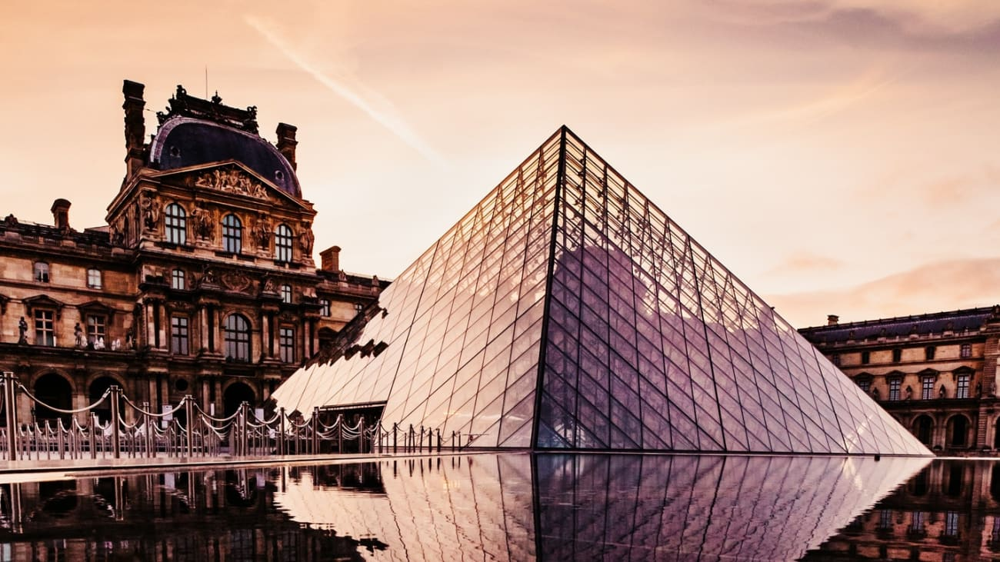
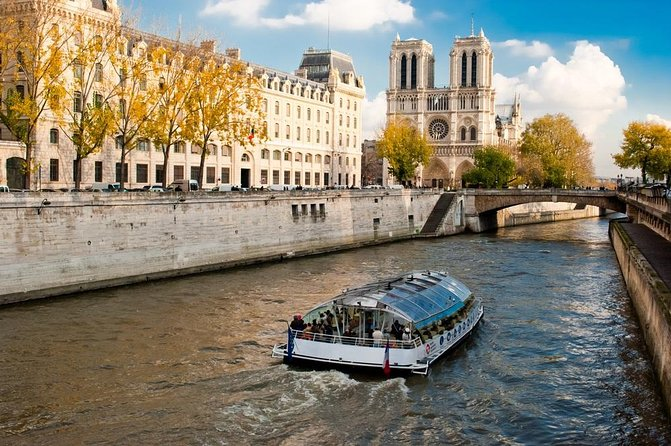
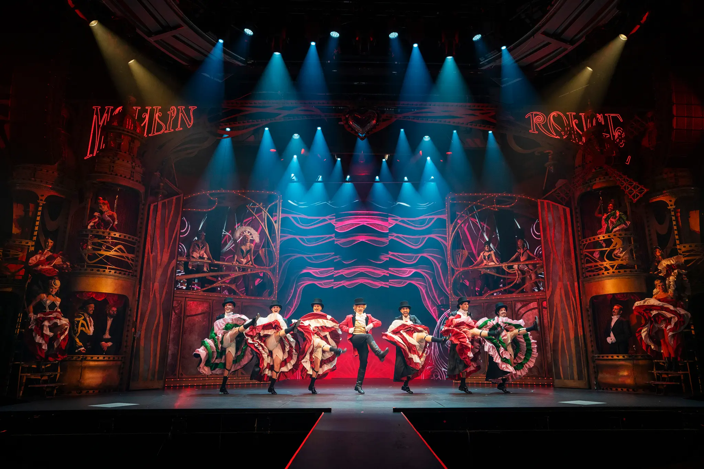

Aktivitet 1: Besøk Eifelltårnet

Eiffeltårnet er Paris' mest ikoniske byggverk, og et symbol på kjærlighet og fransk ingeniørkunst. Du kan ta heisen eller gå trappene til toppen for å oppleve en spektakulær utsikt over byen. Spesielt på kveldstid, når tårnet glitrer av tusenvis av lys, er besøket magisk.
Aktivitet 2: Oppdag Kunst på Louvre-museet!

Louvre er verdens største kunstmuseum og hjem til mesterverk som Mona Lisa, Venus fra Milo og Friheten leder folket. Utforsk tusenvis av kunstverk fra ulike epoker og kulturer. Selv inngangen – den ikoniske glasspyramiden – er et kunstverk i seg selv.
Aktivitet 3: Elvecruise på seinen

En båttur på elven Seinen lar deg se mange av byens vakreste severdigheter fra vannet, som Notre-Dame, Pont Alexandre III og Louvre. Du kan velge mellom en enkel tur, guidede turer, eller et romantisk middagscruise under stjernene.
Aktivitet 4: Kultur og forestillinger på Moulin Rouge

Den legendariske kabaretscenen Moulin Rouge tilbyr spektakulære forestillinger med dans, kostymer og musikk. Det er en ikonisk del av Paris' natteliv og en unik opplevelse for deg som vil ha noe mer enn bare sightseeing.